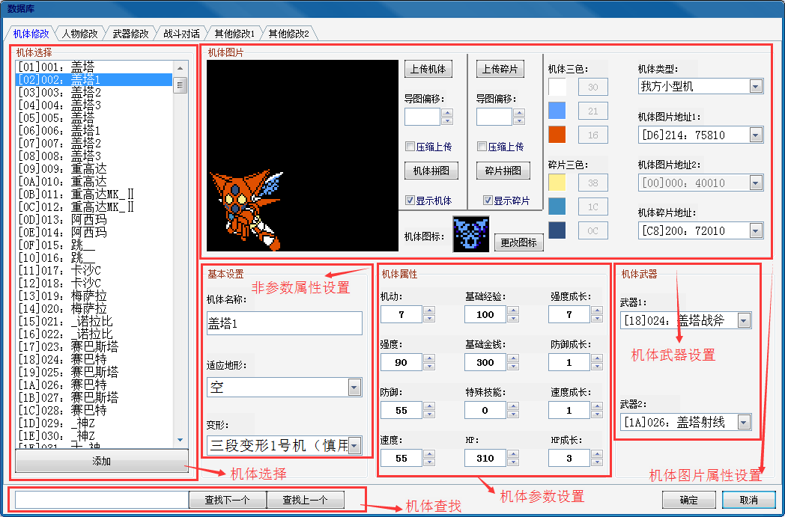
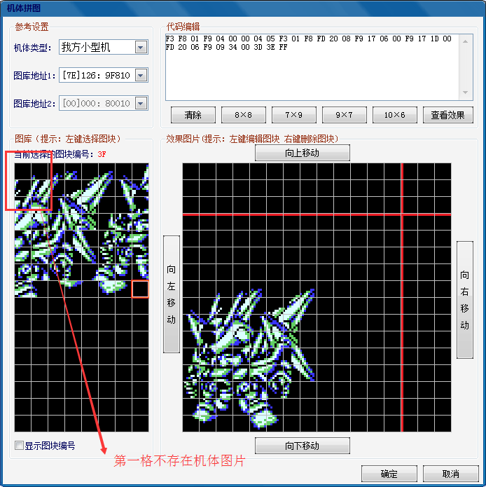
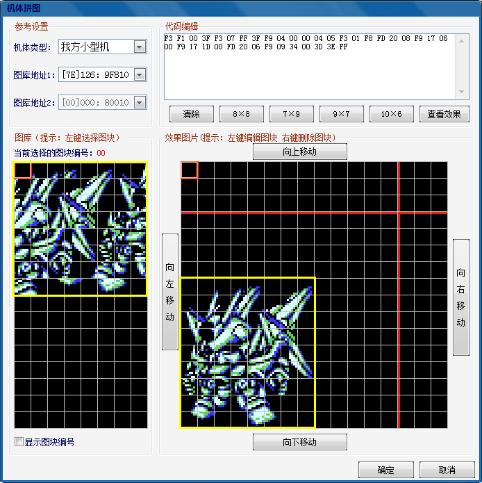

功能区域分布：

1.机体选择：列表框中显示的为机体编号和机体名称，机体编号以16进制和10进制两种形式呈现。选中相应的项可对机体相应数据进行更改。使用添加可增加ROM中机体的最大数量，最大为255。
2.机体查找：查找机体名称首字可进行机体查找（需要注意的是查找的项为当前选中项后面的项，前面的项无法被查找）。
3.非参数属性设置：机体名称更改直接输入即可更改；适应地形为海、陆、空三战；变形有4种可选，无变形，二段变形，三段变形或者四段变形。三段变形不建议更改，如需使用，建议直接更改原版盖塔的三台机体的相应属性。四段变形一般用不到。注意，存在变形关系的两机体编号必须是相邻的，例如编号02的为变形1号机，那么变形2号机必须是编号01或者03的机体。
4.机体参数设置：机体参数属性一共为12项，成长请参照其他修改-成长方式对应下的成长数据。基础金钱表示该机击坠所得，为实际游戏中数值的1／10，如填入8就是能得80块钱；基础经验指的是该机的固有经验（什么是固有经验别问我了），为实际游戏中数值的1／5，提一下古兰森的固有经验显示80（实际400）全军最高，扎古显示18（实际90）；特殊技能：填入1：防御系统 2：盾防 5：发射电波阻止攻击 6：发射电波减命中30% 128：间接攻击无效 129、130、133、134 分别表示间无和其他特殊共存。
5.武器设置：武器的更改需要匹配相应的武器动画，具体请参考修改心得-修改难点-VROM导图流程。
6.机体图片设置：上传机体我们一般选择直接从各个版本中批量导出的机体即可，机体图的导图偏移我们默认设置为1，压缩上传选上（去除需要导入图片的无效图块区域）。导图偏移指的是机体图在图库中的第几格开始导入，由于机体图的图库第一格在战斗过程中是作为背景（黑色图块）使用的，因此第一格是不允许存在机体图片的，所以我们选择偏移1，即在图库的第二格开始导入，如下图1所示。压缩上传指的是将图片压缩后再导入图库，因为我们导入的机体图一般都是完整的，导入的整张图库是一个矩形，其有效部分只占据一部分，其余为黑色图块（无小图块），压缩上传就将这些无效图块自动去除之后导入图库（保证图库的空间利用率），如下图2所示，左边区域是我们导入的完整机体图，导入之后压缩成为左边图库中的部分（去除了无效黑色图块）。机体碎片上传同理。

